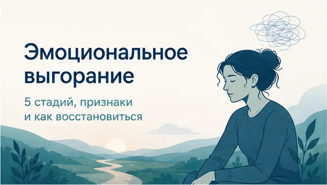
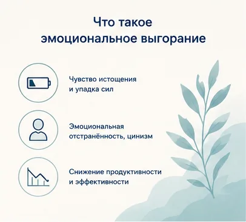
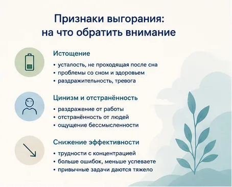
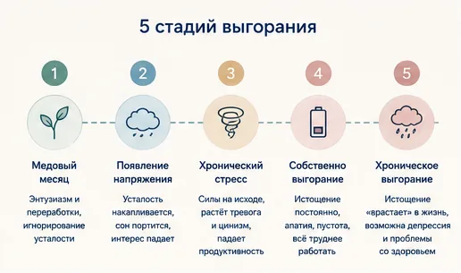
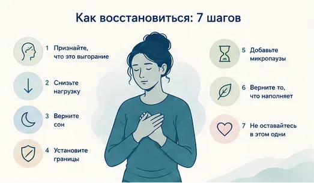
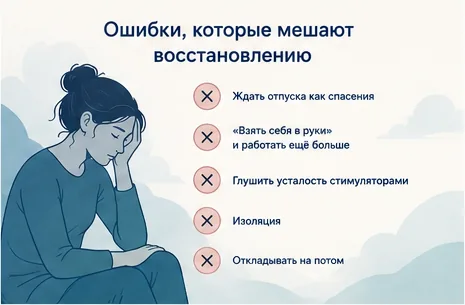
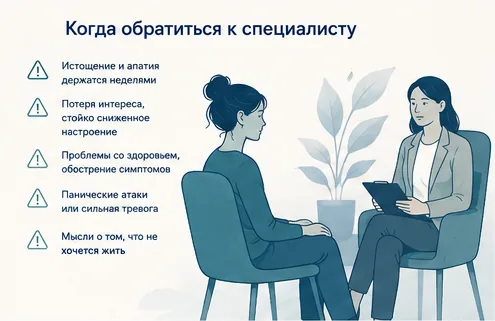

Главная → Блог → Эмоциональное выгорание
Эмоциональное выгорание: 5 стадий, признаки и как восстановиться
Обновлено: 28.06.2026 · 9 минут чтения

Эмоциональное выгорание — это состояние истощения, которое развивается из-за хронического стресса, чаще всего на работе. Это не лень и не слабость, а закономерная реакция психики на длительную перегрузку без восстановления. Хорошая новость: выгорание обратимо. Чем раньше вы заметите признаки и снизите нагрузку, тем быстрее вернутся силы и интерес к жизни.
Что такое эмоциональное выгорание
Выгорание — это синдром, который возникает в ответ на хронический стресс, с которым не удалось справиться. Всемирная организация здравоохранения относит его именно к фактору, связанному с работой, и описывает через три признака: чувство истощения, эмоциональная отстранённость от работы (цинизм, негатив) и снижение продуктивности. Это не болезнь характера, а результат того, что нагрузка долго превышала ресурсы организма.

Ключевое слово здесь — «хронический». Один тяжёлый проект или бессонная неделя выгорания не вызывают. Оно копится месяцами: когда вы постоянно работаете на пределе, не отдыхаете по-настоящему, берёте на себя больше, чем можете унести, и не получаете отдачи. Постепенно организм перестаёт восстанавливаться, и даже привычные дела начинают требовать огромных усилий.
Выгорают не только из-за работы. К нему приводят и постоянный уход за близким, родительство без передышки, учёба на износ. Но механизм всегда один: длительная нагрузка плюс нехватка восстановления и ощущения смысла.
Признаки: как понять, что это выгорание
Выгорание подкрадывается незаметно — поэтому его легко спутать с обычной усталостью. Присмотритесь к себе, если совпадает несколько признаков из трёх групп.

Истощение (тело и эмоции)
- усталость, которая не проходит даже после сна и выходных;
- чувство «выжатости», когда сил нет с самого утра;
- головные боли, проблемы с сном, частые простуды, изменения аппетита;
- раздражительность, слёзы на ровном месте, фоновая тревога.
Цинизм и отстранённость
- работа, которая раньше нравилась, вызывает раздражение или безразличие;
- отстранённость от коллег, клиентов, иногда и от близких;
- ощущение бессмысленности: «зачем всё это», «ничего не меняется».
Снижение эффективности
- трудно сосредоточиться, всё валится из рук, растёт число ошибок;
- привычные задачи занимают вдвое больше времени;
- чувство, что вы стали хуже справляться и ничего не успеваете.
5 стадий выгорания
Выгорание развивается постепенно. Понимать стадии полезно, чтобы поймать процесс раньше — на ранних этапах восстановиться гораздо проще.

- Медовый месяц. Энтузиазм и высокая отдача. Человек берёт на себя всё больше, игнорирует усталость — «я справлюсь». Первые звоночки уже есть, но их не замечают.
- Появление напряжения. Накапливается усталость, портится сон, снижается интерес. Появляются раздражительность и первые мысли «что-то идёт не так».
- Хронический стресс. Силы на исходе, обостряются тревога и цинизм, падает продуктивность. Человек тянет на морально-волевых, отказывается от отдыха и хобби.
- Собственно выгорание. Истощение становится постоянным. Появляются телесные симптомы, апатия, ощущение пустоты и бессмысленности. Работать через силу всё труднее.
- Хроническое выгорание. Истощение «врастает» в жизнь, могут присоединиться депрессия и проблемы со здоровьем. На этой стадии почти всегда нужна помощь специалиста.
Чем выгорание отличается от усталости и депрессии
Эти три состояния легко перепутать, но действовать при них нужно по-разному. Главное отличие — в глубине и в том, помогает ли отдых.
| Усталость | Выгорание | Депрессия | |
|---|---|---|---|
| Причина | Конкретная нагрузка, недосып | Хронический стресс, чаще на работе | Комплекс факторов, не привязана к одной сфере |
| Помогает ли отдых | Да, проходит после сна и выходных | Частично: в отпуске легче, но силы возвращаются медленно | Нет, подавленность сохраняется и на отдыхе |
| Сфера | Локальная, временная | Связана с работой или нагрузкой | Затрагивает всю жизнь |
| Что делать | Выспаться, восстановиться | Снизить нагрузку, вернуть отдых и границы | Обратиться к врачу или психотерапевту |
Если сниженное настроение, потеря интереса и сил держатся больше двух недель и не зависят от нагрузки — это повод не «перетерпеть», а обратиться к специалисту.
Хотите оценить свой уровень объективно? Есть признанные опросники выгорания — тест Маслач (MBI) и методика В. В. Бойко. Они не ставят диагноз, но помогают понять, насколько далеко зашёл процесс, и отслеживать динамику по мере восстановления.
Как восстановиться: 7 шагов
Восстановление — это не один большой рывок, а возвращение баланса между нагрузкой и отдыхом. Начните с того, что выполнимо уже на этой неделе.

- Признайте, что это выгорание. Не «я ленюсь» и не «со мной что-то не так», а закономерная реакция на перегрузку. Само это признание снимает часть вины и даёт точку опоры.
- Снизьте нагрузку прямо сейчас. Найдите хотя бы одну задачу, от которой можно отказаться или которую можно делегировать. Перестаньте добавлять новое, пока не восстановитесь.
- Верните сон. Сон — фундамент восстановления. Ложитесь и вставайте в одно время, уберите экраны за час до сна. Если тревога мешает уснуть, помогут приёмы из статьи о бессоннице при тревоге.
- Установите границы. Определите время, после которого вы не работаете, отключите рабочие уведомления вечером. Учитесь говорить «нет» новым задачам без чувства вины.
- Добавьте микропаузы. Несколько коротких перерывов восстанавливают лучше, чем один длинный отдых раз в месяц. Попробуйте технику Pomodoro (25 минут работы — 5 минут отдыха) или хотя бы две минуты квадратного дыхания между задачами. Делайте паузу до того, как «выжаты», а не после.
- Верните то, что наполняет. Хобби, спорт, общение, природа — всё, что раньше давало радость. При выгорании на это «нет сил», но именно эти занятия пополняют ресурс.
- Не оставайтесь в этом одни. Проговорите состояние с тем, кому доверяете. Если рядом такого человека нет, выговориться можно ИИ-психологу — анонимно и в любое время, чтобы разложить мысли по полкам и наметить первые шаги.
Чувствуете, что выгорели и не знаете, с чего начать? Поговорите с ИИ-психологом — тепло, анонимно, без осуждения и записи.
Начать разговор бесплатноКакие ошибки мешают восстановлению
При выгорании легко свернуть не туда и затянуть процесс. Вот частые ловушки:

- Ждать отпуска как спасения. Две недели отдыха помогают, но если вернуться в те же условия без изменений, выгорание возвращается за пару недель.
- «Взять себя в руки» и работать ещё больше. Попытка перебороть истощение усилием воли только углубляет его.
- Глушить усталость стимуляторами. Литры кофе и энергетики дают краткий эффект, но истощают нервную систему и усиливают тревогу.
- Изоляция. На выгорании хочется закрыться ото всех, но поддержка близких — один из главных ресурсов восстановления.
- Откладывать на потом. «Вот закончу проект и отдохну» — а проектов всегда новый. Чем дольше тянуть, тем глубже стадия.
Когда обратиться к специалисту
С ранним выгоранием часто удаётся справиться самостоятельно — снижением нагрузки, отдыхом и поддержкой. Но есть сигналы, при которых важна помощь врача или психотерапевта:

- истощение и апатия держатся неделями, несмотря на отдых;
- появились стойко сниженное настроение, потеря интереса ко всему — признаки депрессии;
- усилились телесные симптомы: давление, боли, проблемы с сердцем;
- случаются панические атаки или непроходящая тревога;
- появляются мысли о том, что не хочется жить.
Выгорание и сопутствующие ему состояния хорошо поддаются работе с психотерапевтом (особенно в подходе КПТ), и с ними можно справиться.
Частые вопросы
Сколько длится восстановление после выгорания?
Это зависит от стадии. Лёгкое выгорание, замеченное вовремя, отступает за несколько недель отдыха и снижения нагрузки. Глубокое, накопленное за годы, восстанавливается дольше — от нескольких месяцев, и часто требует работы с психотерапевтом. Главное правило: чем раньше вы заметили признаки, тем быстрее и легче проходит восстановление.
Чем выгорание отличается от депрессии?
Выгорание связано прежде всего с работой или хронической нагрузкой, и в отпуске или в выходные становится заметно легче. Депрессия не привязана к одной сфере: подавленность, потеря интереса и сил сохраняются даже на отдыхе и затрагивают всю жизнь. Если сниженное настроение держится больше двух недель и не зависит от нагрузки, это повод обратиться к специалисту.
Можно ли справиться с выгоранием без увольнения?
Да, во многих случаях увольнение не требуется. Часто помогает не смена работы, а изменение нагрузки и границ: пересмотр обязанностей, отказ от переработок, восстановление отдыха и сна. Увольнение стоит рассматривать, только если условия объективно невыносимы и изменить их невозможно.
Что делать, если выгорел, но нельзя взять отпуск?
Восстановление складывается не только из отпуска, но и из ежедневных микропауз. Защитите сон, добавьте короткие перерывы и прогулки в течение дня, уберите хотя бы одну необязательную нагрузку и установите границу по рабочему времени. Эти небольшие шаги уже снижают накопленное напряжение, пока полноценный отдых недоступен.
Если чувствуете, что выгорели, — не оставайтесь с этим один на один. ИИ-психолог поможет разложить мысли по полкам и наметить первые шаги: тепло, анонимно, без осуждения.
Начать разговор бесплатноЧитать также
- Как справиться с тревогой: 8 техник, которые помогают — если выгорание сопровождается тревогой.
- Бессонница при тревоге: почему не спится и что делать — вернуть сон, фундамент восстановления.
- Паническая атака: что делать в момент приступа — если на фоне истощения случаются приступы.
Материал подготовлен командой AI Therapist и основан на доказательных подходах к работе со стрессом и выгоранием — когнитивно-поведенческой терапии (КПТ), ACT и практиках осознанности (Mindfulness). Статья носит просветительский характер и не заменяет консультацию специалиста.
Источник: Всемирная организация здравоохранения — выгорание как профессиональный феномен (МКБ-11).